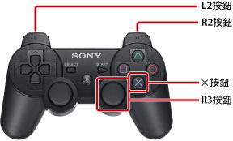

用戶指南的使用方法
本用戶指南將說明PS3™系統軟件的操作方法等機能。硬件（硬體）的使用方法與使用時的注意事項等，請參閱隨附於產品中的使用說明書。
用戶指南的建議瀏覽環境
建議您在以下環境中瀏覽這本用戶指南。
- 您使用之瀏覽器的JavaScript機能若設定為無效，可能無法正常啟動或正確顯示。
請先將JavaScript設定為有效再開始瀏覽。 - 使用電腦的Web瀏覽器時，建議您使用Microsoft Internet Explorer 6.0以上版本。
使用PS3™時閱覽用戶指南時的基本操作
使用PS3™的 （網路瀏覽介面）閱覽用戶指南時，能運用以下的基本操作簡便閱覽。
（網路瀏覽介面）閱覽用戶指南時，能運用以下的基本操作簡便閱覽。
| 方向按鈕 | 讓指標移往超連結 |
|---|---|
 按鈕 按鈕 |
開啟超連結 |
| 右操作桿 | 往任意方向捲動 |
| L1按鈕 | 回到上一個網頁 |
可按照以下操作擴大顯示畫面。

| 按壓R3按鈕（右操作桿） | 擴大顯示／取消擴大顯示。 |
|---|---|
| 擴大顯示時按下L2按鈕／按下R2按鈕 | 擴大／縮小顯示。 |
擴大顯示時按下 按鈕 按鈕 |
解除擴大顯示。 |
用戶指南的按鈕說明
PS3™的決定操作與取消操作之初期預設按鈕可能因區域或產品而異。歐美系語言之用戶指南，皆記載決定操作為按鈕、取消操作為按鈕。其他語言則記載決定操作為按鈕、取消操作為按鈕。
如何列印用戶指南
使用個人電腦，可列印這份用戶指南。遵循以下步驟進行列印，即可一次列印多張頁面。
1. |
使用微軟Windows內建的Internet Explorer，開啟用戶指南的［說明書索引］。 |
|---|---|
2. |
在Internet Explorer的［檔案］功能表上，按一下［列印］。 |
3. |
選擇［選項］，點一下［列印所有連結的文件］開始列印。 |